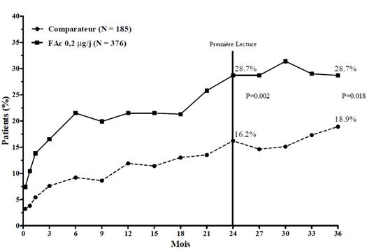
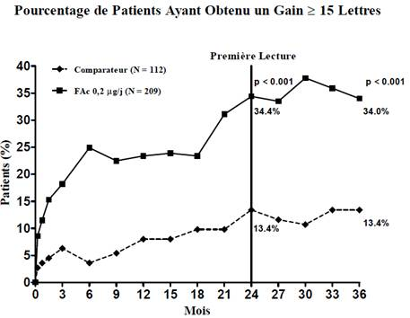
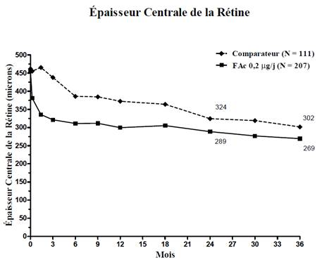
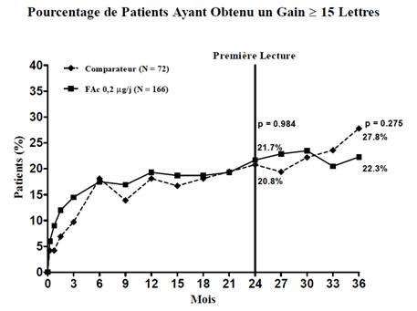
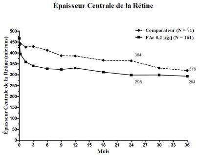
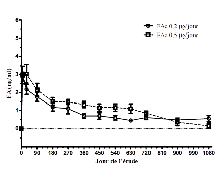

RÉSUMÉ DES CARACTÉRISTIQUES DU PRODUIT
ANSM - Mis à jour le : 03/12/2013
ILUVIEN 190 microgrammes, implant intravitréen avec applicateur
2. COMPOSITION QUALITATIVE ET QUANTITATIVE
Chaque implant intravitréen contient 190 microgrammes d’acétonide de fluocinolone.
Pour la liste complète des excipients, voir rubrique 6.1.
Implant intravitréen avec applicateur.
Cylindre de couleur brun clair mesurant environ 3,5 mm x 0,37 mm.
Applicateur avec aiguille 25 G.
4.1. Indications thérapeutiques
4.2. Posologie et mode d'administration
La dose recommandée est un implant d’ILUVIEN dans l’œil atteint. L’administration simultanée dans les deux yeux n’est pas recommandée (voir rubrique 4.4).
Un autre implant peut être administré après 12 mois si le patient présente une perte d’acuité visuelle ou une augmentation de l’épaisseur rétinienne secondaire à une récidive ou à une aggravation de l’œdème maculaire diabétique (voir rubrique 5.1).
Un retraitement par ILUVIEN ne doit être envisagé que si les bénéfices potentiels sont supérieurs aux risques.
Le traitement par ILUVIEN est réservé aux patients présentant une réponse insuffisante à un traitement antérieur par photocoagulation au laser ou aux autres traitements disponibles pour l’œdème maculaire diabétique.
Population pédiatrique
Il n’y a pas d’utilisation justifiée d’ILUVIEN dans la population pédiatrique dans l’indication d’œdème maculaire diabétique (OMD).
Populations particulières
Aucune adaptation posologique n’est nécessaire chez les patients âgés ou chez les patients présentant une insuffisance rénale ou hépatique.
Mode d'administration
VOIE INTRAVITREENNE.
ILUVIEN ne doit être administré que par voie intravitréenne et par un ophtalmologiste expérimenté dans les injections intravitréennes.
L’insertion de l’implant intravitréen doit être réalisée en conditions d’asepsie contrôlées, incluant le port de gants stériles, l’utilisation d’un champ stérile et d’un blépharostat (ou équivalent) stérile. Une anesthésie adéquate et un antiseptie antibactérienne à large spectre doivent être administrées avant l’insertion.
1. Un collyre antibiotique peut être administré avant l’intervention à l’appréciation de l’ophtalmologiste traitant.
2. Juste avant l’insertion, instiller une goutte d’anesthésique local au niveau de l’insertion (le quadrant temporal inférieur est recommandé), suivie de l’application d’un coton-tige imbibé d’anesthésique ou d’une injection sous-conjonctivale d’un anesthésique approprié.
3. Instiller 2 ou 3 gouttes d’un antiseptique local approprié dans le cul-de-sac conjonctival. Les paupières peuvent être nettoyées avec des coton-tige imbibés d’un antiseptique local approprié. Placer un blépharostat stérile. Demander au patient de regarder vers le haut et appliquer un coton-tige imbibé d’un antiseptique approprié à l’endroit prévu pour l’insertion. Laisser l’antiseptique local sécher pendant 30 à 60 secondes avant l’insertion d’ILUVIEN.
4. L’extérieur de la plaquette thermoformé ne doit pas être considéré comme stérile. Une assistante (en conditions non stériles) doit sortir la plaquette thermoformée de la boîte et retirer le film de la plaquette sans toucher la surface intérieure. Vérifier par la fenêtre de l’applicateur que celui-ci contient bien l’implant.
5. En portant des gants stériles, retirer l’applicateur de la plaquette thermoformée en ne touchant que la surface stérile et l’applicateur.
6. L’insertion doit être effectuée en deux étapes pour limiter la quantité d’air administrée avec l’implant. Avant d’insérer l’aiguille dans l’œil, appuyer sur le bouton et le faire glisser jusqu’au premier arrêt (repères noirs incurvés). Au premier arrêt, relâcher le bouton, il passera en position UP (HAUT).
7. Le positionnement optimal de l’implant est la région située sous la papille optique et à l’arrière de l’équateur. Pour cela, diriger l’aiguille vers la face inférieure de la papille. A l’aide d’un compas, mesurer une distance de 4 mm à partir du limbe dans le quadrant temporal inférieur.
8. Retirer le capuchon de protection de l’aiguille.
9. Déplacer doucement la conjonctive de façon à ce que, après le retrait de l’aiguille, les sites d’insertion conjonctival et scléral de l’aiguille ne soient pas alignés. Prendre des précautions pour éviter tout contact entre l’aiguille et le bord de la paupière ou les cils. Insérer l’aiguille dans l’œil. Pour libérer l’implant, le bouton étant en position haute, appuyer à fond sur le bouton vers l’avant et retirer l’aiguille.
10. Retirer le blépharostat et vérifier par ophtalmoscopie indirecte le positionnement de l’implant, la perfusion correcte de l’artère rétinienne et l’absence de toute autre complication.
Après l’insertion intravitréenne, un examen par ophtalmoscopie indirecte dans le quadrant d’insertion doit être effectué pour vérifier le bon positionnement de l’implant. La visualisation de l’implant peut être facilitée en appuyant sur la sclérotique. L’examen doit inclure un contrôle de la perfusion de la tête du nerf optique immédiatement après l’insertion. Une mesure immédiate de la PIO peut être effectuée à l’appréciation de l’ophtalmologiste.
Après l’intervention, les patients doivent être surveillés pour détecter des complications éventuelles telles qu’endophtalmie, augmentation de la pression intraoculaire, décollement de la rétine et hémorragies ou décollements vitréens. Une biomicroscopie avec tonométrie doit être réalisée dans les deux à sept jours suivant l’insertion de l’implant.
Compte tenu de la durée de libération de l’acétonide de fluocinolone (environ 36 mois), il est recommandé de poursuivre ces contrôles au moins une fois par trimestre afin de détecter l’apparition d’éventuelles complications (voir rubrique 4.4).
L’implant intravitréen ILUVIEN est contre-indiqué en cas de glaucome préexistant ou d’infection oculaire ou périoculaire active ou suspectée, incluant la plupart des maladies virales de la cornée et de la conjonctive, dont la kératite épithéliale active à Herpes simplex (kératite dendritique), la vaccine, la varicelle, les infections mycobactériennes et les mycoses.
ILUVIEN est contre-indiqué chez les patients présentant une hypersensibilité à la substance active ou à l’un des excipients mentionnés à la rubrique 6.1.
4.4. Mises en garde spéciales et précautions d'emploi
L’administration de corticoïdes intravitréens peut provoquer une cataracte, une augmentation de la pression intraoculaire, un glaucome et majorer le risque d’infections secondaires.
La sécurité et l’efficacité d’ILUVIEN administré simultanément dans les deux yeux n’ont pas été étudiées. Le traitement simultané des deux yeux n’est pas recommandé tant que la réponse oculaire et systémique au premier implant n’est pas connue.
Dans les études FAME, l’incidence de chirurgie de la cataracte chez tous les patients phaques a été environ 3 fois plus élevée dans le groupe traité par ILUVIEN (80,0 %) que dans le groupe recevant le traitement simulé (27,3 %). Le délai médian d’apparition d’une cataracte rapportée comme événement indésirable a été d’environ 14 mois. Après insertion de l’implant, les patients phaques ont présenté, avant la chirurgie de la cataracte, une perte de vision due au développement d’une cataracte entre le 9ème et le 18ème mois environ (voir rubrique 4.8).
Dans la population globale des études cliniques, dont étaient exclus les patients ayant une PIO initiale > 21 mmHg, le pourcentage de patients ayant besoin d’un traitement hypotonisant a été de 38 % dans le groupe traité par ILUVIEN versus 14 % dans le groupe recevant le traitement simulé. Ce pourcentage était augmenté à 47 % chez les patients qui avaient une PIO supérieure à la valeur médiane au début de l’étude (≥ 15 mmHg). Une intervention chirurgicale pour le traitement de l’hypertension oculaire a été nécessaire chez 4,8 % des patients traités par ILUVIEN versus 0,5 % des patients recevant le traitement simulé (voir rubrique 4.8). Par conséquent, ILUVIEN doit être utilisé avec prudence chez les patients ayant une PIO initiale élevée et la PIO doit être surveillée étroitement.
En cas d’augmentations de la PIO ne répondant pas aux traitements ou interventions hypotonisants, l’implant ILUVIEN peut être retiré par vitrectomie.
Le nombre de patients diabétiques de type 1 inclus dans les études FAME était limité, mais la réponse à ILUVIEN chez ces patients n’a pas été significativement différente de celle observée chez les patients diabétiques de type 2.
Les données concernant l’effet d’ILUVIEN dans l’œil après une vitrectomie sont limitées. La clairance du médicament serait probablement accélérée après une vitrectomie, mais les concentrations à l’état d’équilibre ne devraient pas être modifiées. Cela peut diminuer la durée d’action de l’implant.
Dans les études FAME, 24 % des patients du groupe de traitement simulé ont reçu à un moment donné des médicaments anticoagulants ou antiplaquettaires versus 27 % des patients traités par ILUVIEN. L’incidence d’hémorragies conjonctivales a été légèrement supérieure chez les patients traités par ILUVIEN de façon concomitante ou dans les 30 jours suivant l’arrêt des médicaments anticoagulants ou antiplaquettaires par rapport aux patients recevant le traitement simulé (0,5 % et 2,7 % respectivement dans les groupes traitement simulé et ILUVIEN). Le seul autre événement rapporté à une incidence plus élevée chez les patients traités par ILUVIEN a été une complication de la chirurgie oculaire (0 % et 0,3 % respectivement dans les groupes traitement simulé et ILUVIEN).
4.5. Interactions avec d'autres médicaments et autres formes d'interactions
Aucune étude d’interaction n’a été réalisée.
Il n'existe pas de données suffisamment pertinentes concernant l'utilisation de l’acétonide de fluocinolone administré par voie intravitréenne chez la femme enceinte. Un traitement systémique au long cours par des corticoïdes pendant la grossesse augmente le risque de retard de croissance intra-utérin ainsi que le risque d’insuffisance surrénalienne chez le nouveau-né. Les études effectuées chez l’animal ont mis en évidence des effets tératogènes après une administration systémique (voir rubrique 5.3). Par conséquent, même si l’exposition systémique à l’acétonide de fluocinolone après un traitement intraoculaire local est considérée comme très faible, ILUVIEN ne doit être utilisé pendant la grossesse que si le bénéfice potentiel justifie le risque potentiel pour le fœtus.
L’acétonide de fluocinolone est excrété dans le lait maternel. Aucun effet sur l’enfant n’est prévisible du fait de la voie d’administration et des concentrations systémiques qui en résultent. Cependant, ILUVIEN ne doit pas être utilisé pendant l’allaitement à moins d’une nécessité absolue.
Fécondité
Il n’existe pas de données concernant l’effet d’ILUVIEN sur la fécondité.
4.7. Effets sur l'aptitude à conduire des véhicules et à utiliser des machines
ILUVIEN a été évalué chez 768 patients présentant un œdème maculaire diabétique dans les études cliniques FAME. Les effets indésirables les plus fréquents ont été : une chirurgie de la cataracte, une cataracte et une augmentation de la pression intraoculaire.
Dans les études de phase III, 38,4 % des patients traités par ILUVIEN ont eu besoin d’un traitement hypotonisant et 4,8 % d’une intervention chirurgicale pour réduire la PIO. L’utilisation d’un traitement hypotonisant a été similaire chez les patients qui avaient reçu deux traitements ou plus par ILUVIEN.
Deux cas d’endophtalmie ont été rapportés chez des patients traités par ILUVIEN dans les études de phase III, soit un taux d’incidence de 0,2 % (2 cas/1 022 injections).
Bien que la majorité des patients des études cliniques FAME n’ait reçu qu’un seul implant (voir rubrique 5.1), les implications pour la tolérance à long terme de la rétention dans l’œil de l’implant non bioérodable ne sont pas connues. Dans les études cliniques FAME, les données à 3 ans montrent que les événements tels que cataracte, augmentation de la pression intraoculaire et corps flottants ont été un peu plus fréquents chez les patients ayant reçu 2 implants ou plus. Cela est considéré comme étant dû à l’augmentation de l’exposition au médicament plutôt qu’à un effet de l’implant lui-même. Dans les études précliniques, il n’a pas été mis en évidence d’augmentation des problèmes de tolérance autres que des modifications du cristallin chez des lapins ayant reçu 2 à 4 implants en 24 mois. L’implant est composé de polyimide et il est très similaire à une haptique de lentille intraoculaire ; il est donc attendu qu’il reste inerte dans l’œil.
Liste des événements indésirables
Les effets indésirables ci-dessous ont été jugés comme étant liés au traitement et sont présentés selon la convention suivante : très fréquent (≥ 1/10) ; fréquent (≥ 1/100, < 1/10) ; peu fréquent (≥ 1/1 000, < 1/100) ; rare (≥ 1/10 000, < 1/1 000) ; très rare (< 1/10 000). Au sein de chaque fréquence de groupe, les effets indésirables sont présentés suivant un ordre décroissant de gravité.
|
Infections et infestations |
Peu fréquent : endophtalmie |
|
Affections du système nerveux |
Peu fréquent : céphalées |
|
Affections oculaires |
Très fréquent : chirurgie de la cataracte, cataracte1, augmentation de la pression intraoculaire2, corps flottants (myodésopsie) Fréquent : glaucome3, trabéculectomie, douleur oculaire4, hémorragie vitréenne, hémorragie conjonctivale, vision trouble5, chirurgie d’un glaucome, baisse de l’acuité visuelle, vitrectomie, trabéculoplastie Peu fréquent : occlusion vasculaire rétinienne6, affection du nerf optique, maculopathie, atrophie optique, ulcère conjonctival, néovascularisation de l’iris, exsudats rétiniens, dégénérescence vitréenne, décollement vitréen, opacification capsulaire postérieure, adhérences de l’iris, hyperémie oculaire, amincissement de la sclérotique, expulsion de l’implant hors de la sclérotique, écoulement oculaire, prurit oculaire. |
|
Lésions, intoxications et complications liées aux procédures |
Peu fréquent : expulsion de l’implant, implant dans la ligne de vision, complication opératoire, douleur opératoire |
1 Inclut les termes MedDRA pour cataracte (NOS - sans autre précision), cataracte sous-capsulaire, cataracte nucléaire et cataracte diabétique.
2 Inclut les termes MedDRA pour augmentation de la pression intraoculaire et hypertension oculaire.
3 Inclut les termes MedDRA pour glaucome, glaucome à angle ouvert, glaucome limite, excavation du nerf optique et augmentation du rapport cup/disc (rapport largeur de l’excavation/largeur de la papille).
4 Inclut les termes MedDRA pour douleur oculaire, irritation oculaire et gêne oculaire.
5 Inclut les termes MedDRA pour vision trouble et diminution de l’acuité visuelle.
6 Inclut les termes MedDRA pour occlusion de la veine rétinienne, occlusion de l’artère rétinienne et occlusion vasculaire rétinienne.
Description d’effets indésirables sélectionnés
L’utilisation de corticoïdes au long cours peut provoquer des cataractes et une augmentation de la pression intraoculaire. Les fréquences mentionnées ci-dessous reflètent les données observées chez l’ensemble des patients inclus dans les études FAME. Les fréquences observées chez les patients présentant un OMD chronique n’ont pas été significativement différentes de celles rapportées dans la population globale.
Dans les études cliniques de phase III, l’incidence de cataracte chez les patients phaques a été d’environ 82 % dans le groupe traité par ILUVIEN et de 50 % dans le groupe recevant le traitement simulé. Une chirurgie de la cataracte a été nécessaire après 3 ans chez 80 % des patients phaques traités par ILUVIEN versus 27 % des patients recevant le traitement simulé ; chez la plupart des patients, la chirurgie a été nécessaire au bout de 21 mois. La cataracte sous-capsulaire postérieure est le type le plus fréquent de cataracte cortisonique. Pour ce type de cataracte, l’intervention est plus difficile et peut être associée à un risque plus élevé de complications chirurgicales.
Dans les études FAME, les patients ayant une PIO initiale > 21 mmHg étaient exclus. L’incidence d’augmentation de la pression intraoculaire a été de 37 % et un traitement hypotonisant a été nécessaire chez 38 % des patients, la moitié d’entre eux ayant besoin d’au moins deux médicaments pour équilibrer la PIO. L’utilisation d’un traitement hypotonisant a été comparable chez les patients ayant été traités à nouveau par un autre implant pendant l’étude. De plus, une intervention chirurgicale ou un traitement au laser pour contrôler la PIO a été nécessaire chez 5,6 % (21/375) des patients qui avaient reçu un implant (trabéculoplastie, 5 patients [1,3 %], trabéculectomie, 10 patients [2,7 %], cycloablation endoscopique, 2 patients [0,5 %], et autres interventions chirurgicales, 6 patients [1,6 %]).
Dans le sous groupe de patients ayant une PIO supérieure à la médiane au début de l’étude (≥ 15 mmHg), un traitement hypotonisant a été nécessaire chez 47 % d’entre eux et le pourcentage d’interventions chirurgicales ou de traitements au laser a augmenté à 7,1 %. Dans ce sous groupe, 5 patients (2,2 %) ont été traités par trabéculoplastie, 7 patients (3,1 %) par trabéculectomie, 2 patients (0,9 %) par cycloablation endoscopique et 4 patients (1,8 %) par d’autres types de chirurgie du glaucome.
Aucun cas de surdosage n’a été rapporté.
5. PROPRIETES PHARMACOLOGIQUES
5.1. Propriétés pharmacodynamiques
Classe pharmacothérapeutique : Anti‑inflammatoires, corticoïdes, non associés, code ATC : S01BA15
Les corticoïdes inhibent la réponse inflammatoire à différents agents déclenchants. Ils inhibent la formation d’œdème, le dépôt de fibrine, la dilation capillaire, la migration leucocytaire, la prolifération capillaire, la prolifération des fibroblastes, le dépôt de collagène et la formation de cicatrices fibreuses associés à l’inflammation.
Les corticoïdes agiraient par induction des protéines inhibitrices de la phospholipase A, appelées lipocortines. On suppose que ces protéines contrôlent la biosynthèse de médiateurs puissants de l’inflammation tels que les prostaglandines et les leucotriènes en inhibant la libération de leur précurseur commun, l’acide arachidonique. L’acide arachidonique est libéré des phospholipides membranaires par la phospholipase A2. Il a également été démontré que les corticoïdes diminuent les taux de facteur de croissance de l’endothélium vasculaire (VEGF), une protéine qui augmente la perméabilité vasculaire et provoque l’œdème.
L’efficacité d’ILUVIEN a été évaluée dans deux études multicentriques randomisées en double aveugle, en groupes parallèles, menées chez des patients présentant un œdème maculaire diabétique et ayant antérieurement reçu au moins un traitement par photocoagulation au laser. La durée de suivi était de trois ans pour chaque patient. Au total, 74,4 % des patients ont reçu 1 implant, 21,6 % ont reçu 2 implants, 3,5 % ont reçu 3 implants, 0,5 % ont reçu 4 implants et aucun patient n’a reçu plus de 4 implants. Dans les deux études, le critère principal d’évaluation de l’efficacité était le pourcentage de patients ayant obtenu un gain d’acuité visuelle d’au moins 15 lettres après 24 mois. Dans chacune de ces études, le critère principal a été atteint pour ILUVIEN (voir Figure 1 pour les résultats combinés du critère d’efficacité principal).
Figure 1. Pourcentage de patients ayant obtenu un gain ≥ 15 lettres par rapport au début de l'étude, études FAME combinées

Lorsque l’efficacité a été évaluée en fonction de la durée de la maladie, une réponse bénéfique significative a été observée chez les patients dont l’ancienneté de l’OMD était supérieure à la médiane (≥ 3 ans), tandis que les patients chez lesquels la durée de l’OMD était plus courte n’ont pas présenté de bénéfice supplémentaire par rapport au traitement comparateur en termes d’amélioration de l’acuité visuelle (Figures 2 et 3). Ces données en sous-groupes étayent l’indication dans le traitement d’OMD chronique (c’est-à-dire d’une durée d’au moins 3 ans) qui figure à la rubrique 4.1.
Figure 2 : Comparaison des pourcentages de patients ayant obtenu un gain ≥ 15 lettres de la meilleure acuité visuelle corrigée (MAVC) par rapport à l’entrée dans l'étude et variation moyenne de l’épaisseur centrale de la rétine excessive, par sous-groupe en fonction de la durée de l’OMD ≥ 3 ans
|
OMD ³3 ans |
 |
|
 |
Figure 3 : Comparaison de la variation moyenne de l’épaisseur centrale de la rétine excessive et pourcentage de patients ayant obtenu un gain ≥ 15 lettres de la MAVC par rapport à l’entrée dans de l'étude et variation moyenne de l’épaisseur centrale de la rétine excessive, par sous-groupe en fonction de la durée de l’OMD < 3 ans
|
OMD <3 ans |

|
|
 |
L’Agence européenne des médicaments a accordé une dérogation à l’obligation de soumettre les résultats d’études réalisées avec ILUVIEN dans tous les sous-groupes de la population pédiatrique dans le traitement de l’œdème maculaire diabétique (voir rubrique 4.2 pour les informations concernant l’usage pédiatrique).
5.2. Propriétés pharmacocinétiques
Figure 4 : Concentrations de la FA dans l’humeur aqueuse humaine chez des sujets ayant reçu 1 implant (Etude FAMOUS)

5.3. Données de sécurité préclinique
Il n’existe pas de données concernant le potentiel mutagène, cancérogène ou la toxicité sur la reproduction ou le développement d’ILUVIEN. L’acétonide de fluocinolone est tératogène chez la souris et le lapin après une administration systémique.
Evaluation du risque environnemental
Le risque environnemental résultant de l’utilisation autorisée de l’implant ILUVIEN est négligeable du fait de la dose très faible d‘acétonide de fluocinolone administrée.
L’applicateur pour l’injection d’ILUVIEN conçu spécifiquement ne présente pas de risques environnementaux puisqu’il est éliminé immédiatement dans un collecteur à aiguilles DASRI après son usage unique spécifique.
Voir Rubrique 6.6 pour l’élimination et la manipulation.
Alcool polyvinylique, tube en polyimide, adhésif siliconé.
Sans objet.
Après première ouverture de l’opercule, utiliser immédiatement.
6.4. Précautions particulières de conservation
A conserver à une température ne dépassant pas 30°C. Ne pas mettre au réfrigérateur ou congeler.
La plaquette thermoformée scellée ne doit être ouverte qu’immédiatement avant utilisation.
6.5. Nature et contenu de l'emballage extérieur
6.6. Précautions particulières d’élimination et de manipulation
Eliminer l’applicateur en toute sécurité dans un collecteur à aiguilles DASRI.
Tout produit non utilisé ou déchet doit être éliminé conformément à la réglementation en vigueur.
7. TITULAIRE DE L’AUTORISATION DE MISE SUR LE MARCHE
centaur house
ancells business park
ancells road
fleet
gu51 2uj
royaume uni
8. NUMERO(S) D’AUTORISATION DE MISE SUR LE MARCHE
9. DATE DE PREMIERE AUTORISATION/DE RENOUVELLEMENT DE L’AUTORISATION
[à compléter par le titulaire]
10. DATE DE MISE A JOUR DU TEXTE
[à compléter par le titulaire]
Sans objet.
12. INSTRUCTIONS POUR LA PREPARATION DES RADIOPHARMACEUTIQUES
Sans objet.
Médicament à prescription réservée aux spécialistes en ophtalmologie.
Liste I.